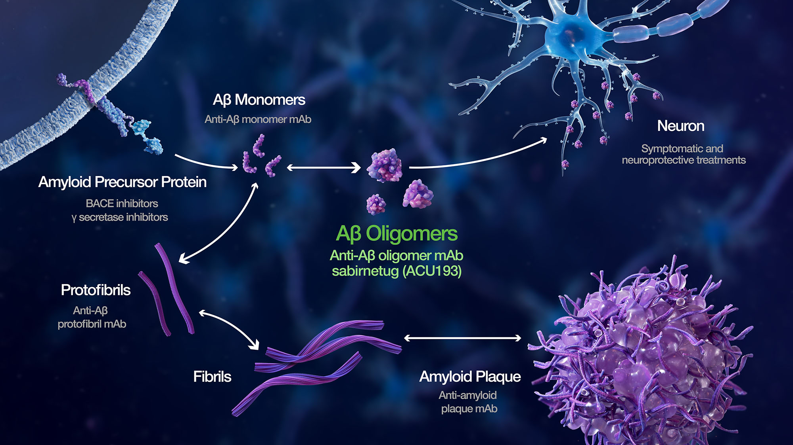
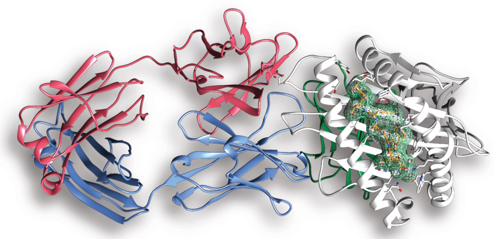

Our laboratory focuses on understanding the fundamental principles underlying protein misfolding and aggregation, developing novel peptide-based therapeutics, and applying proteomics approaches to study disease mechanisms. We combine experimental and computational approaches to tackle complex biological problems with potential applications in neurodegenerative disease treatment and protein biotechnology.
Amyloid Research

Our research on amyloid systems focuses on understanding the mechanisms of protein misfolding and aggregation in neurodegenerative diseases such as Alzheimer's, Parkinson's, and Huntington's. We investigate:
- Structural characterization of amyloid fibrils
- Kinetics of protein aggregation
- Factors influencing amyloid formation
- Toxicity mechanisms of amyloid oligomers
- Novel methods to detect early aggregates
Using a combination of biophysical techniques, including fluorescence spectroscopy, circular dichroism, and electron microscopy, we aim to understand the molecular basis of amyloid formation and develop strategies to prevent or reverse protein aggregation.
Peptide Engineering

Our peptide engineering research focuses on designing novel peptides with specific functions for therapeutic and diagnostic applications. We work on:
- Designing peptide inhibitors of protein aggregation
- Developing peptide-based drug delivery systems
- Engineering self-assembling peptides for biomaterial applications
- Creating peptide sensors for disease biomarkers
- Enhancing peptide stability for improved pharmacokinetics
- Structure-based design of functional peptides
By combining computational design approaches with experimental validation, we aim to develop peptide-based solutions for challenging biomedical problems, particularly in neurodegenerative diseases.
Proteomics Research

Our proteomics research employs advanced mass spectrometry and protein analysis techniques to understand protein expression, modifications, and interactions in health and disease. Focus areas include:
- Protein profiling in neurodegenerative diseases
- Post-translational modifications associated with protein aggregation
- Biomarker discovery for early disease diagnosis
- Proteomic analysis of cellular response to aggregated proteins
- Protein-protein interaction networks
- Targeted proteomics for pathway analysis
Through comprehensive proteomics approaches, we aim to uncover the molecular mechanisms underlying disease processes and identify potential targets for therapeutic intervention.
PEPr Services and Applications

The Proteomics and Peptide synthesis facility has been established with an aim to cater services for research in the field of Proteomics and Peptide synthesis. This facility mainly focuses on:
Proteomics
- Protein Identification
- Protein profiling (with and without fractionation)
- Post translational modifications
- Protein mapping/maximum sequence coverage
- Identification of N-terminus by mass spectrometry
- Molecular weight measurement of intact proteins
Peptide Synthesis
- Synthesis of Peptide (up to 20 amino acids)
- Custom peptide design for specialized applications
- Characterization and purification of synthesized peptides
- Scale-up production for experimental needs
Our facility provides these services to both internal research groups and external collaborators, supporting a wide range of biomedical research applications from basic science to translational medicine.
Therapeutic Approaches

We are developing innovative therapeutic approaches to combat neurodegenerative diseases, focusing on protein misfolding disorders. Our research includes:
- Small molecule inhibitors of protein aggregation
- Peptide-based aggregation inhibitors
- Immunotherapeutic strategies
- Chaperone-mediated approaches
- Enzyme-based degradation of aggregates
By targeting different stages of the protein aggregation process, from initial misfolding to mature fibril formation, we aim to develop effective therapeutic strategies for preventing and treating neurodegenerative diseases.
Computational Approaches

We utilize computational methods to complement our experimental work, providing insights into molecular mechanisms and guiding our research. Our computational approaches include:
- Molecular dynamics simulations of protein folding and aggregation
- Structure-based drug design
- Prediction of amyloidogenic regions in proteins
- Peptide design algorithms
- Proteomics data analysis and pathway mapping
- Machine learning for biomarker discovery
These computational tools allow us to study complex biological processes at a molecular level and develop more effective strategies for therapeutic intervention.
Our Collaborators
IIT Kanpur
GBRC
GBU

IIIT Hyderabad